Introduction
OpenJPA is an open source implementation of the Java JPA (Java Persistence API) specification from Apache. JPA provides an agnostic Java-based API for storing and retrieving information to a backend database. It has a canonical query language named Java Persistence Query Language, or JPQL, that blends with the programming methods of Java and eliminates the need to tailor database queries for a particular database. However, JPA also supports native SQL which can be used for quick ports with a known backend database. This tutorial is designed to walk you through the steps of setting up a simple web application to use OpenJPA Geronimo and to transact the derby database that comes with Geronimo. The tutorial code uses a simple Java Server Page (JSP), backed up by some basic classes. It displays a table of inventory items and categories. In this tutorial, we will not dive into details regarding the JSP code. Its purpose is to be a window through which you can examine OpenJPA. The intended audience for this tutorial is those with some knowledge and understanding of the Java programming language and who are just beginning with OpenJPA. To start, you must download the following requirements and install them on your computer. For the purposes of this tutorial, we are using Eclipse as the IDE and Microsoft Windows as the operating system of choice.
Prerequisites¶
Geronimo V2.2: You can get it here . Download this file and unzip it to a permanent location. There is no installer. The server will run from the command line.
Java (J2SE) V1.6: This tutorial was developed and tested with Java V1.6. If you don't already have Java V1.6 you can get the IBM JDK here or the Sun JDK here .
Eclipse V3.2 or later: This version has annotation support included. Annotations play a large role in OpenJPA. Download Eclipse 3.2 or later.
Apache OpenJPA library: For the purpose of implementing this tutorial you can select OpenJPA v1.2 or greater. You can download Apache OpenJPA from the Apache site. Note that the Milestone (openjpa-all-2.0.0-M3.jar as of this writing) is an early release of OpenJPA 2.0 and may have some instabilities. No issues have been noted for the usage in this tutorial.
The tutorial code files: These files are provided with this tutorial. You will add them to your Eclipse project.
Setup and Running the Sample¶
Now, that you have all the prerequisites for this tutorial downloaded and installed, the following sections will walk you through the Eclipse project setup and the OpenJPA configuration. Make sure you read through and follow each part carefully.
Setting up Eclipse¶
After installing Eclipse, create a new project in a dedicated workspace for the tutorial. Complete the following setup instructions: First, make sure your Eclipse environment is updated and has the Geronimo plugin. If you do not know how to do that, follow the instructions found at the Geronimo website .
-
Create a new Java project in Eclipse called, "OpenJPATutorial".
-
From the menu, select: File->New->Enterprise Application Project. (If Enterprise Application Project is not available as an option, select Project and then choose Enterprise Application Project from the list. Then click on the Next button). When the New Project settings dialog appears, use the following settings:
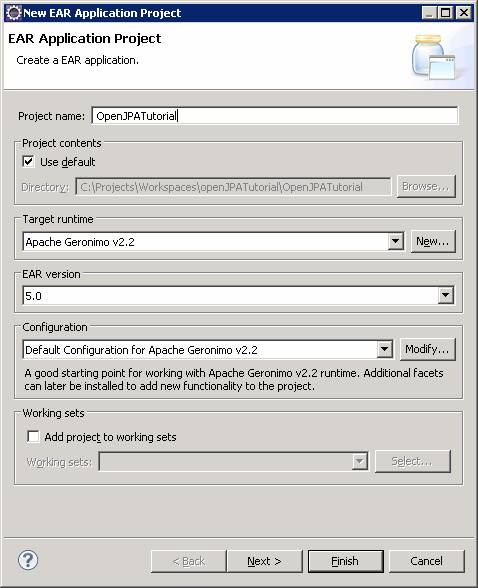
-
Under the Target Runtime section, select Apache Geronimo v2.2.
- If you do not already have Geronimo setup in Eclipse then you will have to do so now. Click on the New... button.
- If Apache Geronimo v2.2 does not appear in the list under Apache, click the Download additional server adapters link at the top right of the dialog. If the adapter does not appear in that list then follow the directions from the Geronimo site.
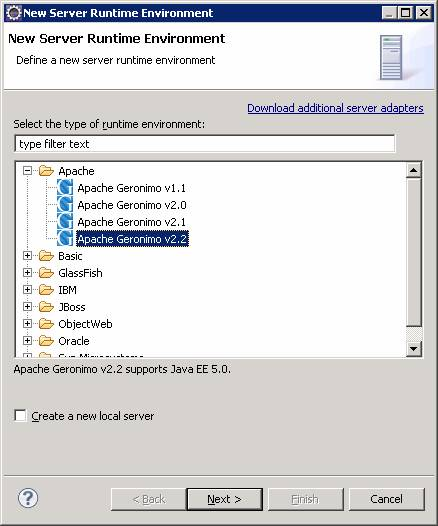
- Select Apache->Apache Geronimo v2.2
- Click Next.
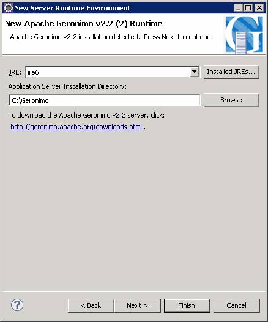
- Set the JRE to jre6 if it is not already set.
- Browse for the install directory of Geronimo v2.2 on your system.
- Click Finish. You should see the following:
-
Now, click the Next button. You should see this:
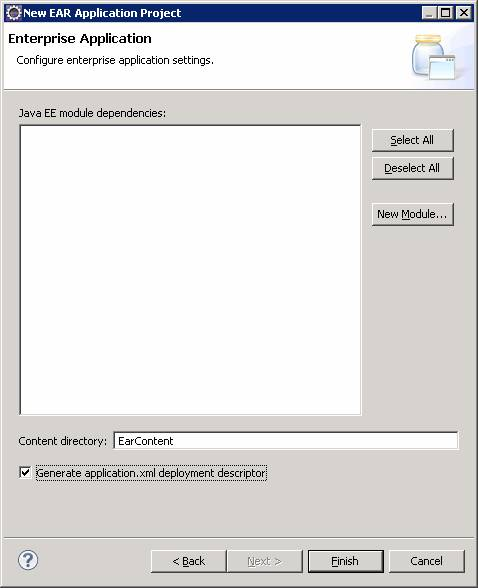
- Check the Generate application.xml deployment descriptor option.
-
Click the New Module... button:
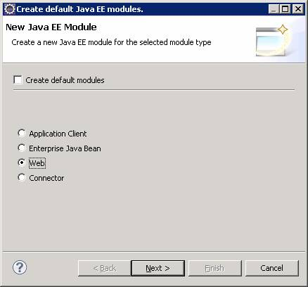
-
De-select Create default modules.
- Select the Web option.
-
Click Next.
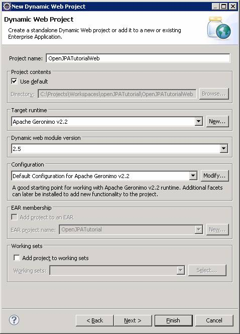
-
Click Finish. You will see the following:
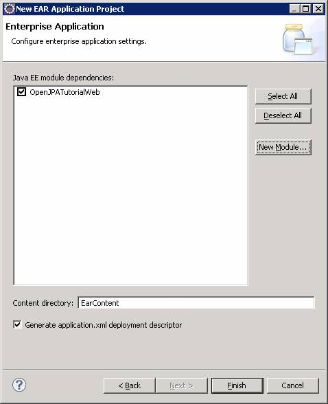
-
Click Finish.
-
Now, your Project Explorer should look like this (partially expanded):
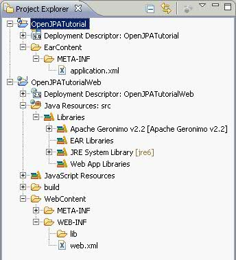
-
If you double-click on the Deployment Descriptor: OpenJPATutorial, you should see the application.xml open:
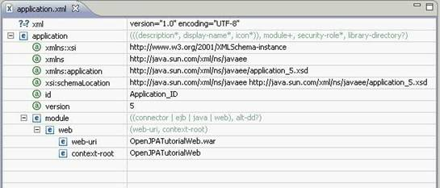
-
Now we will bring in the sample code. The easiest way to add the sample code is to find the source provided with this tutorial and copy it to the src folder under the OpenJPATutorialWeb folder in your project directory in Windows Explorer:
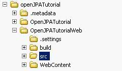
-
Now go back to Eclipse. Right-click on the OpenJPATutorialWeb folder in the Project Explorer view and select Refresh, or press the F5 key on your keyboard. Now you will see this:
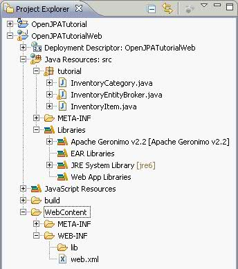
Notice that all the source files compile without error. That is because Geronimo comes with OpenJPA v1.1 built in.
-
Now copy the index.jsp file from the tutorial into the Web Content directory under the Project directory in Windows Explorer:
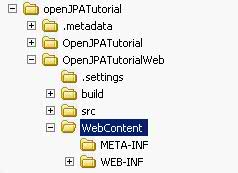
- Got to the Project Explorer and refresh the project. You should see this:
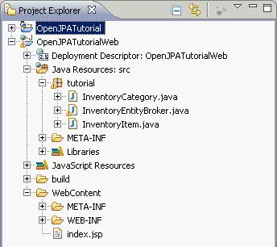
Running and Configuring Geronimo and Derby¶
Geronimo has no installer and runs from the command line. Here are some quick instructions to get you started.
- In Windows, open a command prompt and navigate to the Geronimo bin directory.
- Type the command:
start-server
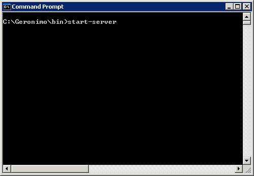
Press the Enter key.
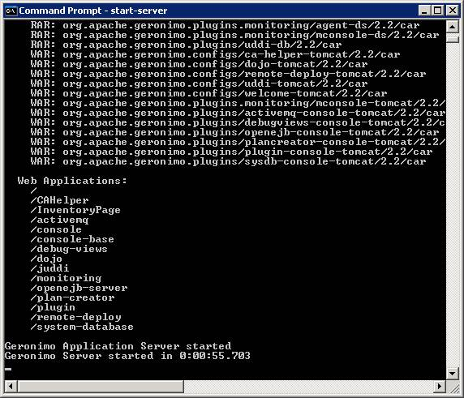
- Open a web browser and go to the address:
http://localhost:8080/console
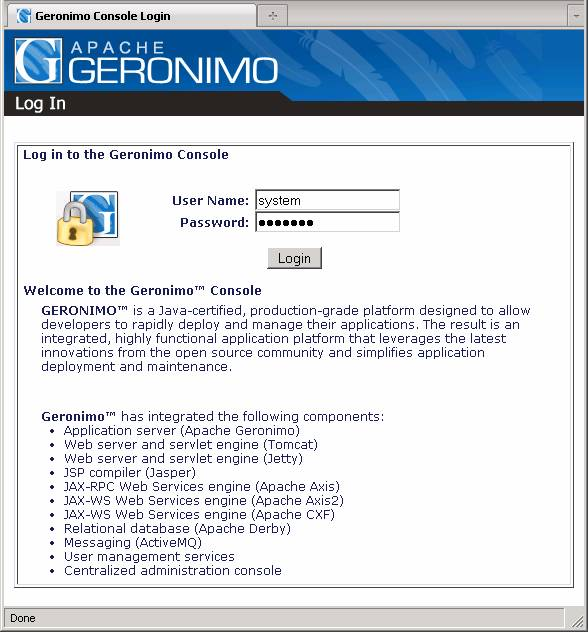
The default password is manager.
- You will come to the Welcome page. On the left menu, at the bottom, find the section for the Embedded DB. This is the Derby database control page.
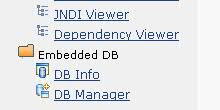
- Click on the link for the DB Manager
- You will see two sections: DB Viewer and Run SQL.
- In the Run SQL section, in the text field labeled Create DB, type in StoreSystem. This is the name of the database that the OpenJPA sample is configured to transact.
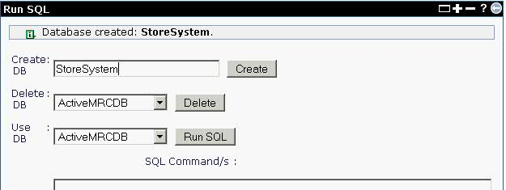
- Click on the Create button. You should now see the StoreSystem database appear in the DB Viewer section.
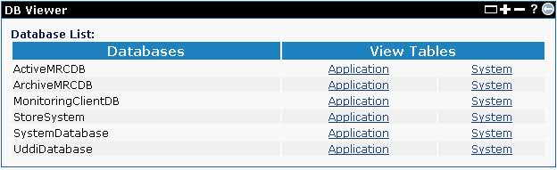
- We are now ready to deploy and run the sample code.
Running and Deploying the Sample Code in Geronimo¶
The sample code provided with this tutorial is working code. It is a simple inventory database program that shows items and categories. But even this simple example requires the ability to add, edit and delete entries. It requires the ability to sort and filter database queries and it requires the identification of the relationship of the items to the categories. In this example, the relationship is one to many. Knowing that relationship is important to how the code is written. Before we analyze the code and OpenJPA, we will first deploy the sample and see it work. To deploy the sample code follow these instructions:
- In Eclipse, in the Project Explorer, right click on the OpenJPATutorial project and select: Export->EAR file.
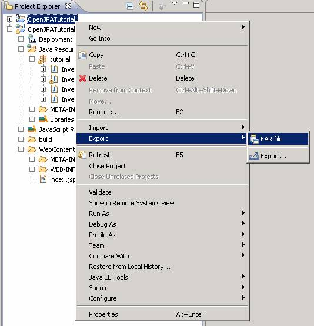
- In the Ear Export dialog, find a convenient place to put the exported EAR file.
- Check the Overwrite existing file check box.
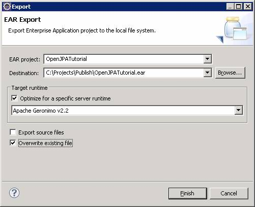
- Click Finish.
- Go out to Windows Explorer and copy the file TutorialDeploymentPlan.xml to the location of the exported ear. This is the deployment plan that Geronimo requires to deploy the application.
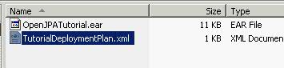
- Open the Geronimo console in a web browser and log in.
- In the Console Navigation menu on the left, under the Applications section, click on the Deploy New item.
- Browse to the location of the exported EAR file and the deployment plan XML file.
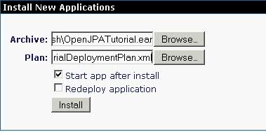
- Click on the Install button. You should see this.
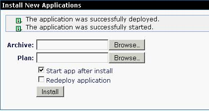
- In the Console Navigation menu on the left, under the Applications section, click on the Web App WARs item.
-
Notice that the OpenJPATutorial application is now listed and that there is a clickable link under the URL heading:
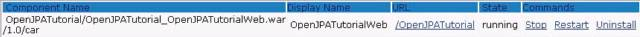
-
Click on the link OpenJPATutorial and now you should see this:
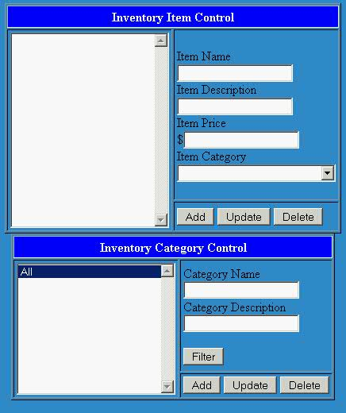
Each of the buttons will execute OpenJPA code. The lists are filled by running queries on the Derby database.
- Add a some categories and items
- Make sure you test each of the buttons and see the results.
Examining the Sample Code¶
Now that everything is set up and you have seen it work, let's look more closely at the parts of the code that use OpenJPA. The JSP code is just a prop to explore OpenJPA and we will not examine it.The sample application source code is provided for this tutorial and you may run as-is with no customizations. However, you have the option of reproducing the code manually using the following explanations. Whichever method you choose, locate the code that corresponds to explanations as you follow along.
- Java code: This tutorial comes with the following java source files:
- index.jsp: This is the interface code only. It does call into other classes but it does not use any OpenJPA code directly.
- InventoryEntityBroker.java: This class contains methods that encapsulate the OpenJPA handling code. It is provided as a way to separate OpenJPA functionality from the web interface.
- InventoryItem.java: This is an OpenJPA Entity class file. This file is an example of a simple OpenJPA Entity with a relationship.
- InventoryCategory.java: This is an OpenJPA Entity class file. This file is an example of a simple OpenJPA Entity with a relationship.
- Persistence code: Each entity concept that would be a database table will be its own class. In this case, the tables are called "InventoryItem" and "InventoryCategory". Annotations in the Java file will associate the properties with the database columns. The annotation, @Column, maps the property name to the column name for synchronization with the database. If the table corresponding tables do not exist, OpenJPA can use these annotations to create the tables' schema dynamically based on the property type and length.
| Note In this example, the property annotations ( @Column, @Version, and @Id) are placed on the getter methods. They can alternatively be placed on the property declarations. For more information on these annotations and to see what other annotations are in OpenJPA, see the Apache OpenJPA 2.0 User's Guide: Chapter 5
|
- Persistence.xml: JPA requires the use of a XML file called the "persistence.xml" that describes how to access the data. The XML file must be created in the META-INF directory. The META-INF directory containing the persistence.xml must be located with the source files.
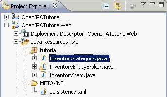
In the following example, the file only requires a few fields.
- The following elements are specific to this tutorial:
- persistence-unit: the name is the table name to bind. In this case it is 'person'.
- class: the java class that is bound to the table 'person'.
- property: openjpa.jdbc.SynchronizeMappings: This tells OpenJPA to automatically create the table with the class definition if a table does not already exist.
- property: openjpa.ConnectionURL: The URL of the database connection.
-
property: openjpa.ConnectionDriverName: the class name of the JDBC driver for Derby. This must be available via the classpath. In this tutorial, the driver is built into Geronimo so no extra actions are needed.
-
A complete explanation of the persistence.xml is in the Apache OpenJPAV2.0 user's Guide: Chapter 6
-
Create the Entity Manager. In the provided code, the EntityManager is a property of the InventoryEntityBroker class. The Entity Manager controls the interaction with the database. You must use the Entity Manager to start or access transactions or to send queries.
-
The following code must be added before using any of the persistence APIs (If you are using the provided sample code, this is already included):
EntityManagerFactory factory = Persistence. createEntityManagerFactory("InventorySystem", System.getProperties()); EntityManager em = factory.createEntityManager(); -
Note that the name, "InventorySystem", is the same one identified in the persistence.xml.
- This code can be placed just before a query or transaction or they can be class properties.
-
Regardless of the scope, the EntityManager and the EntityManagerFactory should be closed when they are no longer needed:
... em.close(); factory.close(); ... -
The EntityManagerFactory and EntityManager full descriptions are in the following OpenJPA documentation:
- EntityManagerFactory: https://nightlies.apache.org/openjpa/builds/latest/multihtml/jpa_overview_emfactory.html
- EntityManager: https://nightlies.apache.org/openjpa/builds/latest/multihtml/jpa_overview_em.html
-
DB interface class. In this example, the InventoryEntityBroker class contains all the OpenJPA database interaction code. This is not required but it is a good idea for keeping the functionality componentized. For example, if you want to pull all of the records from the InventoryItem table, the code would look like this:
- All of the specific APIs are described in the OpenJPA javadoc
-
Notice that the Query is not standard SQL. It is actually JPQL, which is a specialized form of query language specifically designed for JPA.
- In the JPQL statement, "SELECT item FROM InventoryItem item", notice that InventoryItem has the same case as the class InventoryItem.
- JPQL uses java objects in the query and not the database table names. The statement identifies the variable for InventoryItem as "item".
- JPQL provides an object oriented query language that is independent of the database being queried. So, regardless of which database being used, the JPQL does not change. The JPA runtime takes care of doing the translation from the object world to the desired relational database.
- For more information on JPQL, check out this Java Persistence Query Language reference
-
Also in the InventoryEntityBroker is code to add entries the database tables. Since you did not create a table for InventoryItem in the StoreSystem database in Derby, OpenJPA 2.0 will create the table the first time an "add" is attempted.
- Consider the following code:
You can then call the addItem() method in another part of the code. The
EntityManager.persist() method will throw an exception if a transaction has
not been started. The transaction must be committed by calling the
Transaction.commit() method after all updates have been applied or else the
changes will not be saved to the database:
...
em.getTransaction().begin();
addItem(...);
em.getTransaction().commit();
...
* When this is executed the first time it will use the annotations to create the Person table, then OpenJPA 2.0 will populate it with the
provided data.
* Note the use of the getTransaction() method to start an update and then to commit it. The concept is the same as in any database transaction
processing.
* Also note that while the getAllItems() function requires a JPQL SELECT query, the update type actions have APIs.
* Take a look in the InventoryEntityBroker code at the addItem(), updateItem() and deleteItem() functions and note the simplicity of these
operations.
- An important aspect of relational databases is, of course, the relationships. The basic relationship types are: one to many, many to one, and many to many. OpenJPA provides annotations to identify the related fields. Open the source file, InventoryCategory.java in Eclipse and find the following code:
| Remember These annotations contribute to the creation of the tables and the relationships. It is important to put as much thought into how these objects relate to each other as you would if you were designing the database tables because you are designing the database tables. You can see more about the relationship annotations at the Apache OpenJPA site. The documentation is here . |